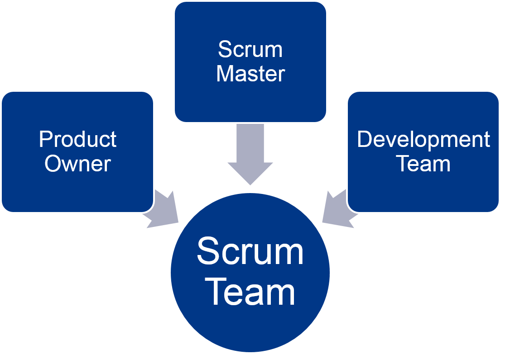

Scrum for developers
Scrum Fundamentals
Scrum overview

Scrum Team

Product/Release Burn-Down Chart
A Burn-Down chart shows
For a release, it shows remaining features to complete for a release |

|
Velocity
|

|
Task Board
|

|
Sprint Burn-Down Chart
|

|
Scrum events and time boxes (Real World)

Scrum events and time boxes (Training)

Story Points
- Estimates are done in releative, unitless values
- You estimate only in relations, not absolutely
- Estimation can be done
- By Planning Poker (for few or new stories)
- By Affinity Estimation (for a complete product backlog)
- By Magic Estimation (similar to Affinity Estimation)
- Why relative?
- Story points stay constant over time
- The teams velocity can change
- Story points normalize skill level
- Story points normalize done level
Planning Poker
- Product Owner presents and reads a new story
- Every Development Team member chooses a card (1,2,3,5,8,13,20,40,100,?)
- When everybody is ready, all cards are revealed
- Are all cards in range of three (1-3, 2-5, 3-8, 5-13,...)?
- If yes, continue at step 1
- If no, Players with highest and lowest cards discuss their views for a moment. Then continue with step 2.